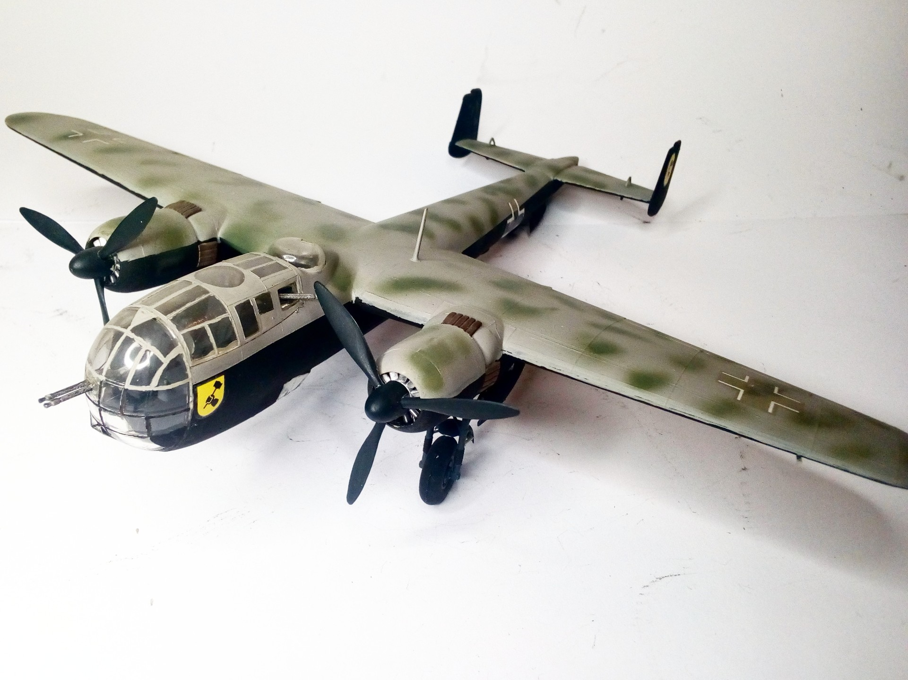
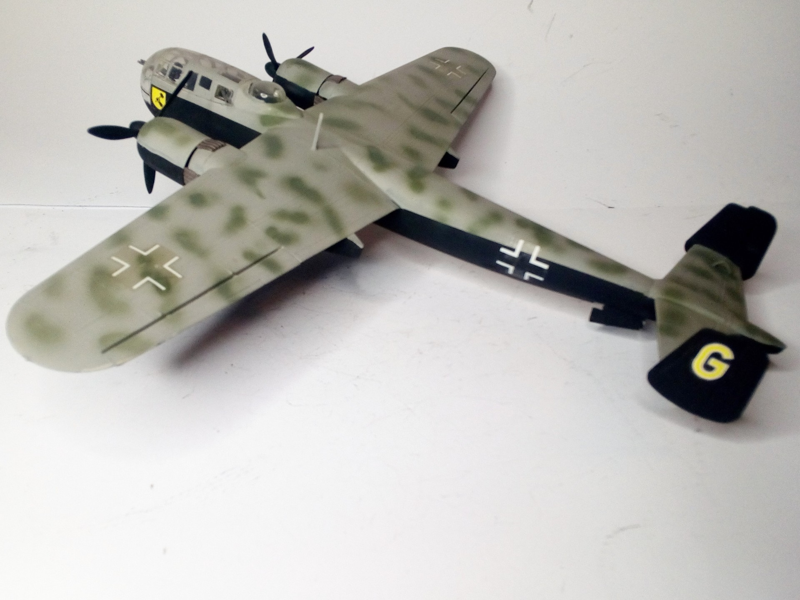

Aerei · scale model archive
Dornier Do217 K1
Dornier Do217 K1 — Kit: Italeri, Scale: 1/72. 3./KampfGeschwader 2 'Holzhammer' #1/72 #Italeri #do217k

Photo gallery

English description
3./KampfGeschwader 2 'Holzhammer'
#1/72 #Italeri #do217k
Descrizione italiana
3./KampfGeschwader 2 “Holzhammer”. #1/72 #Italeri #do217k